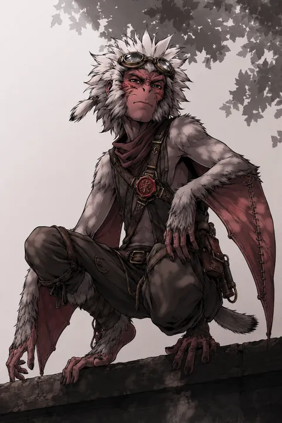

I · Postać główna
Jack [Leothern]
Wędrowny mediator z Whitewood, który uczy się, kiedy dłoń otworzyć — a kiedy pokazać pazury.
- Dossier postaciStrona54 KB
- Jack - Vulpin (karta z Google Docs)PDF161 KB DOCX57 KB
Dungeons & Dragons 5e · kampania
Archiwum postaci, notatek z sesji i materiałów o świecie. Wszystkie pliki są tu w oryginalnej postaci.
I · Postać główna
Wędrowny mediator z Whitewood, który uczy się, kiedy dłoń otworzyć — a kiedy pokazać pazury.

II · Postać zapasowa
„Dla wszystkich — wcielenie chaosu. Dla siebie — wolna od wszelkich okowów.”

III
Okłamuje żywych, żeby ich ukoić — i nie wie, że przy okazji naprawdę dotyka umarłych.

IV
Syn ziemi i cienia, który drąży w ciemności i nie zatrzymuje niczego.

V · Postać zapasowa IV
„Broń, która nie wiedziała, że jest bronią. Syn, który nie wiedział, że został zbudowany.”

Sesje I–XVII, od 24.08.2025 do 31.01.2026: Przestoje, Anchurus, Hydra, wampiry i wyprawa do Iron Wake.
Obremont, Święto Wina, tawerna „Smutna koniczyna” i folwark de la Lumbre (sesja stacjonarna 2: 25.07.2026).
Wioska zwierzoludzi w brzozowym lesie na granicy elfich puszcz (Vetora, prowincja Krong) — dom Jacka.
Wspólny Zwierzoludzki: geneza, filozofia i budowa wspólnego języka Whitewood.